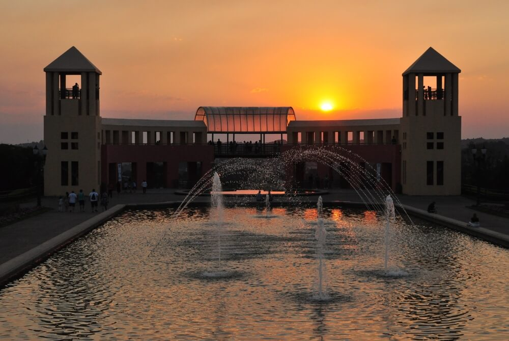

Um dos pontos turísticos mais iconicos de Curitiba
O Parque Tanguá, localizado em Curitiba, é um dos parques mais belos e visitados da cidade, destacando-se por sua paisagem deslumbrante e arquitetura única. Inaugurado em 1996, o parque ocupa uma área de 235 mil metros quadrados e foi construído em torno de pedreiras desativadas, aproveitando os recursos naturais de forma sustentável.
Um dos principais atrativos do parque é o mirante no topo de uma estrutura que abriga uma cascata artificial, proporcionando uma vista panorâmica incrível da cidade e do lago abaixo. Abaixo do mirante, há um túnel escavado na rocha, que pode ser atravessado de barco ou a pé, conectando duas áreas do parque e criando uma experiência única para os visitantes.
O jardim em estilo francês, localizado na parte superior do parque, é outro destaque, com canteiros geométricos e uma fonte central que conferem ao local um ar elegante e tranquilo. O parque oferece áreas de lazer, trilhas para caminhadas e ciclismo, e espaços para piqueniques, sendo ideal para atividades ao ar livre e momentos de relaxamento.
O Tanguá é também um exemplo de reabilitação ambiental, transformando antigas áreas industriais em um espaço verde que combina lazer, natureza e conservação. Com sua beleza cênica e estrutura diversificada, o Parque Tanguá é um dos destinos mais apreciados por curitibanos e turistas, proporcionando uma conexão única com a natureza e com a história da cidade.
